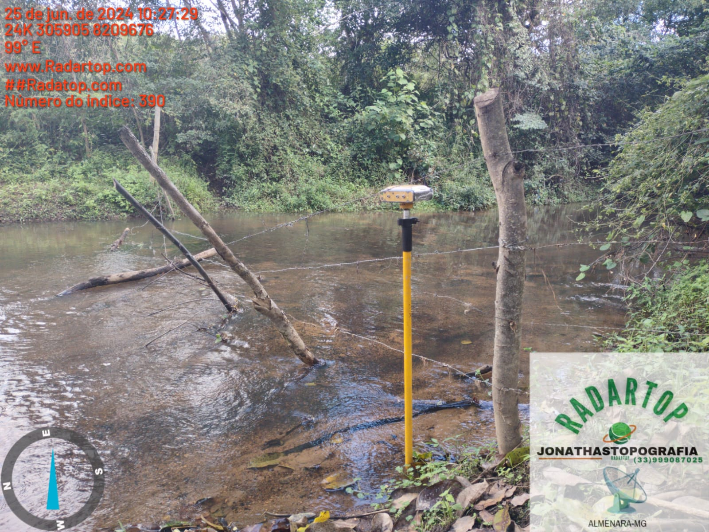
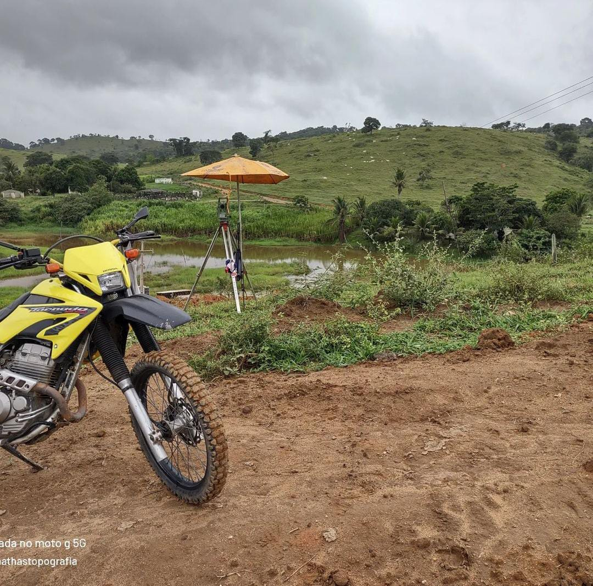

Galeria




Especialista em levantamentos topográficos e serviços de medição.
A RadarTop, tem a missão de fornecer soluções de topografia com a mais alta precisão e confiabilidade, nossa equipe altamente qualificada utiliza tecnologia de ponta para atender com precisão a demanda de nossos clientes. Buscamos constantemente a excelência em cada projeto, garantindo que nossos clientes recebam dados precisos e detalhados para tomar decisões informadas. Comprometemo-nos a oferecer um atendimento personalizado, priorizando a transparência e a satisfação total dos nossos clientes em cada etapa do processo.
>Caro Cliente, a RadarTop, compreende a importância dos dados topográficos precisos para o sucesso do seu projeto. Por isso, me dedico a fornecer serviços de levantamento e medição com um compromisso inabalável com a qualidade e a precisão. Meu objetivo é ser o seu parceiro confiável, oferecendo soluções que atendam às suas necessidades específicas e ajudem a transformar suas ideias em realidade. Valorizo cada cliente e acredito em uma abordagem personalizada, ouvindo suas necessidades e trabalhando para superar suas expectativas. Estou sempre disponível para oferecer suporte e responder a qualquer dúvida, garantindo que você tenha uma experiência tranquila e bem-sucedida. Agradeço por considerar a RadarTop para suas necessidades topográficas e estou ansioso para colaborar com você em seus próximos projetos. Atenciosamente, RadarTop
O levantamento planialtimétrico é um processo que mapeia um terreno, capturando suas dimensões horizontais e verticais. Ele fornece dados precisos sobre a localização e a elevação dos pontos no terreno, resultando em mapas detalhados e curvas de nível que mostram a topografia do local. Esse tipo de levantamento é crucial para projetos de engenharia, arquitetura e planejamento urbano, além de auxiliar na análise ambiental e na criação de registros detalhados das condições do terreno. Utiliza equipamentos como estações totais e GPS, além de tecnologias modernas como LIDAR para garantir a precisão dos dados obtidos.
O levantamento cadastral é a coleta e registro de dados detalhados sobre propriedades e terrenos, incluindo suas dimensões, limites e características. Ele fornece informações precisas para a atualização de cadastros imobiliários, planejamento urbano e regularização de propriedades. Utiliza equipamentos de medição e tecnologias modernas, como GPS e SIG, para garantir a precisão dos dados. É essencial para a gestão eficiente de propriedades, o desenvolvimento imobiliário e a conformidade com regulamentações legais.
Furos de sondagem são perfurações realizadas no solo para coletar amostras e analisar suas propriedades. Utilizados em estudos geotécnicos e de engenharia, esses furos ajudam a determinar a composição, resistência e estabilidade do solo e das rochas. As informações obtidas são essenciais para o planejamento e a construção de fundações, estruturas e obras de infraestrutura, garantindo a segurança e a viabilidade dos projetos.
É a técnica de mapeamento e medição que define com precisão os limites e características de uma propriedade rural. Isso é fundamental para garantir a regularização fundiária e o cumprimento de obrigações legais. Risco: Não realizar o georreferenciamento pode resultar na falta de clareza sobre os limites e características de uma propriedade rural. Consequências: Isso pode levar a problemas na regularização fundiária, dificuldade em cumprir obrigações legais e até litígios por limites de terra indefinidos.
O SICAR é uma ferramenta importante para o registro e monitoramento das áreas rurais em relação às questões ambientais. Isso é crucial para o cumprimento das legislações ambientais e para evitar penalidades. Risco: Não realizar o cadastro no SICAR pode levar à falta de conformidade com as leis ambientais, sujeitando a propriedade a penalidades. Consequências: Isso pode resultar em multas e sanções legais, além de limitar o acesso a crédito rural e programas governamentais.
O CCIR é um documento emitido pelo governo que comprova a regularidade cadastral de um imóvel rural. É essencial para transações imobiliárias, obtenção de crédito rural e acesso a programas governamentais. A ausência do CCIR pode ser interpretada como um sinal de irregularidade cadastral, o que pode atrair a atenção das autoridades responsáveis pela reforma agrária. Se houver suspeitas de que um imóvel rural não está devidamente cadastrado ou regularizado, isso pode levar a investigações por parte do INCRA, e a propriedade pode ser considerada apta para a reforma agrária.
O ITR é um tributo obrigatório para proprietários de imóveis rurais. O correto cálculo e pagamento desse imposto depende de informações precisas sobre a propriedade, como as fornecidas pelo georreferenciamento. Risco: O pagamento incorreto do ITR devido à falta de informações precisas pode resultar em penalidades financeiras. Consequências: Proprietários que não calculam e pagam corretamente esse imposto podem enfrentar multas e juros acumulados, impactando negativamente as finanças da propriedade.
A CRO é uma certidão que reconhece a ocupação de uma área rural. É fundamental para a regularização de imóveis, especialmente quando há dúvidas sobre a ocupação histórica da terra. Risco: Não ter a CRO pode complicar a regularização de imóveis, especialmente quando a ocupação histórica da terra é questionada. Consequências: Isso pode atrasar ou impedir a legalização da propriedade, resultando em incertezas sobre a posse e o uso da terra.
Licenciamento ambiental é o processo pelo qual ati vidades e empreendimentos são autorizados a operar, com base na avaliação de seus impactos ambientais. Esse processo visa garantir que os projetos estejam em conformidade com as normas ambientais, minimizando danos ao meio ambiente e promovendo o desenvolvimento sustentável. Inclui a análise de relatórios de impacto ambiental, a definição de medidas de mitigação e o monitoramento contínuo das atividades.
Supressão refere-se à remoção ou destruição de vegetação e recursos naturais, geralmente para dar lugar a projetos de construção, agricultura ou desenvolvimento urbano. Esse processo deve ser cuidadosamente planejado e compensado para minimizar impactos ambientais, seguindo regulamentações e exigências de recuperação para garantir a preservação do meio ambiente.
Telefone: (33) 99908-7025
Email: jonathastop@gmail.com
Endereço: Rua Eurico Soares, 211, Bairro Centro - Almenara, MG